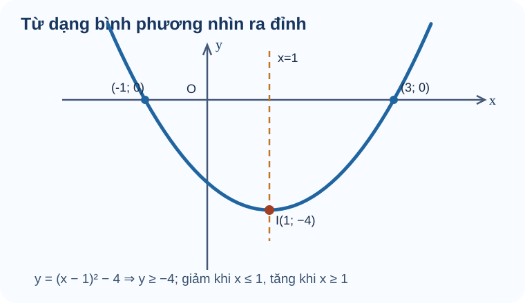

Bài 16. Hàm số bậc hai
TOÁN 10 · CHƯƠNG VI · BÀI 16
Khám phá hàm số bậc hai qua đồ thị parabol, đỉnh, trục đối xứng, bảng biến thiên và các bài toán thực tế.
Cùng tìm hiểu
Quỹ đạo một quả bóng có thể đi lên, đạt độ cao lớn nhất rồi đi xuống. Đồ thị dạng parabol giúp mô tả quan hệ như thế. Trước khi nhớ công thức đỉnh, em thử nhìn \(y=(x-1)^2-4\). Bình phương không âm nên \(y\ge-4\), và dấu bằng xảy ra tại \(x=1\). Vậy chính biểu thức đã chỉ ra đỉnh \(I(1,-4)\), trục đối xứng \(x=1\) và giá trị nhỏ nhất \(-4\).
Nếu hệ số của bình phương đổi thành âm, parabol mở xuống và đỉnh cho giá trị lớn nhất. Khi áp dụng vào độ cao hoặc thời gian, luôn kiểm điều kiện thực tế: đỉnh có nằm trong khoảng đang xét hay không. Như vậy, toán học không chỉ cho một con số mà còn cho biết con số đó có phù hợp tình huống không.
Ví dụ trực quan

Cách đọc hình. Đường nét đứt \(x=1\) đi qua đỉnh \(I(1;-4)\), nơi parabol đạt giá trị nhỏ nhất. Đọc từ trái sang phải: đồ thị đi xuống trước \(x=1\), rồi đi lên sau \(x=1\). Hai giao điểm với trục \(Ox\) là \((-1;0)\) và \((3;0)\).
Bậc hai cần hệ số bậc hai thực sự khác 0
Quỹ đạo phóng vật có thể uốn cong thành hình parabol, khác đường thẳng. Không phải cứ biểu thức viết có \(x^2\) thì chắc chắn là hàm bậc hai nếu hệ số x² bằng 0.
Đã biết hàm số, biểu thức đại số và bậc của đa thức sau rút gọn; biết \(x^2\) là bình phương x. Em có thể học các kiến thức tiền đề ngay trong bài.
Một hàm bậc hai có phần thay đổi theo \(x^2\) không mất đi: \(y=ax^2+bx+c\) với \(a\ne0\). Nếu \(a=0\), quy tắc chỉ còn bậc nhất hoặc hằng, và các kết luận về parabol không còn đúng.
Vì sao chọn phương pháp này? Rút gọn biểu thức và kiểm hệ số của x² trước khi dùng công thức đỉnh, trục hoặc biệt thức; không chia cho 2a nếu a=0.
Vận dụng. Trong \(f(x)=0x^2+2x+1\) và \(g(x)=-x^2+2x+1\), hàm nào là hàm số bậc hai?
Đối chiếu
Đáp án: Chỉ \(g(x)\) là bậc hai (a=−1); \(f(x)=2x+1\) là bậc nhất.
Vì sao: Hệ số x² của f bằng 0 nên hạng tử bậc hai biến mất; của g bằng −1 khác 0.
Đây là câu tự luyện công khai, không chấm điểm thành thạo. Nếu chưa đúng, mở hướng dẫn tự sửa phía dưới.
Đỉnh là điểm đổi chiều tăng/giảm của parabol
Khi mô hình độ cao có dạng parabol, ta cần biết thời điểm lên cao nhất chứ không muốn thử vô hạn giá trị. Đỉnh chứa vị trí cực trị và trục đối xứng.
Vì bình phương số thực luôn không âm nên \((x-h)^2\ge0\). Dấu của hệ số trước bình phương sẽ quyết định parabol mở lên hay mở xuống. Em có thể học các kiến thức tiền đề ngay trong bài.
Viết \(y=a(x-h)^2+k\): vì bình phương nhỏ nhất bằng 0 tại x=h, đỉnh chính là \(I(h;k)\). Dấu a quyết định cực tiểu hay cực đại; đường thẳng x=h đi qua đỉnh và là trục đối xứng.
Vì sao chọn phương pháp này? Ưu tiên hoàn thành bình phương khi cần đỉnh và trục; nếu a=0 thì không phải parabol, nếu a<0 đỉnh là cao nhất chứ không phải thấp nhất.
Vận dụng. Cho \(f(x)=(x-2)^2-3\). Đỉnh I, trục đối xứng và hướng mở của parabol là gì?
Đối chiếu
Đáp án: Đỉnh \(I(2;-3)\), trục \(x=2\), parabol mở lên.
Vì sao: Vì hệ số của bình phương là 1>0 và \((x-2)^2\ge0\), giá trị nhỏ nhất −3 nhận tại x=2.
Đây là câu tự luyện công khai, không chấm điểm thành thạo. Nếu chưa đúng, mở hướng dẫn tự sửa phía dưới.
Khoảng tăng/giảm và tập giá trị đến từ hình mở lên/xuống
Độ cao theo thời gian của một vật có thể tăng tới đỉnh rồi giảm; không thể kết luận hàm này đồng biến trên cả trục số. Biết chiều parabol cho ta suy quy luật biến thiên.
Biết đỉnh \(I(h;k)\), dấu a và định nghĩa đồng/nghịch biến B15; đọc trục x theo chiều trái sang phải. Em có thể học các kiến thức tiền đề ngay trong bài.
Nếu a<0, parabol mở xuống nên tăng tới h rồi giảm sau h, giá trị không vượt k. Nếu a>0 thì ngược lại, luôn không nhỏ hơn k. Vì \((x-h)^2\ge0\), đây là chứng minh đại số cho tập giá trị chứ không chỉ nhìn tranh.
Vì sao chọn phương pháp này? Không đảo chiều tăng/giảm khi a âm; đầu mút h có thể nêu bằng dấu ngoặc nhất quán, và khi mô hình thực tế có miền hẹp thì phải xét đúng miền đó.
Vận dụng. Với \(f(x)=-2(x+1)^2+8\) trên \(\mathbb R\), tìm giá trị lớn nhất, tập giá trị, khoảng đồng biến/nghịch biến.
Đối chiếu
Đáp án: GTLN 8 tại x=−1, \(T=(-\infty;8]\); đồng biến trên \((-\infty;-1)\), nghịch biến trên \((-1;+\infty)\).
Vì sao: Vì −2(x+1)²≤0. Trục x=−1 là ranh giới đổi chiều, parabol mở xuống; mọi y≤8 đều đạt được.
Đây là câu tự luyện công khai, không chấm điểm thành thạo. Nếu chưa đúng, mở hướng dẫn tự sửa phía dưới.
- Với \(a>0\): parabol mở lên, hàm giảm trên \(( -\infty;h )\), tăng trên \((h;+\infty)\), đạt GTNN \(k\) tại \(x=h\).
- Với \(a<0\): parabol mở xuống, hàm tăng trên \(( -\infty;h )\), giảm trên \((h;+\infty)\), đạt GTLN \(k\) tại \(x=h\).
Bảng biến thiên và tập giá trị tổng quát (đặt \(h=-\frac{b}{2a}\), \(k=-\frac{\Delta}{4a}\)):
| Điều kiện | Nghịch biến | Đồng biến | Cực trị tại \(x=h\) | Tập giá trị \(T\) |
|---|---|---|---|---|
| \(a>0\) | \((-\infty;h)\) | \((h;+\infty)\) | GTNN \(k\) | \(\left[-\frac{\Delta}{4a};+\infty\right)\) |
| \(a<0\) | \((h;+\infty)\) | \((-\infty;h)\) | GTLN \(k\) | \(\left(-\infty;-\frac{\Delta}{4a}\right]\) |
Vẽ parabol cần các điểm nhất quán, không phỏng đoán
Hai parabol có cùng hướng mở nhưng đặt lệch vị trí sẽ mô tả các bài toán rất khác nhau. Muốn vẽ đúng, phải có điểm đỉnh, trục và các điểm kiểm chứng.
Đã biết hệ trục tọa độ, nghiệm của tam thức đơn giản, cách thay x để tính y và tính đối xứng qua đường thẳng đứng. Em có thể học các kiến thức tiền đề ngay trong bài.
Đồ thị \(y=a(x-h)^2+k\) đối xứng quanh x=h. Vẽ theo thứ tự: (1) đỉnh, (2) trục, (3) giao trục và điểm đối xứng cần thiết, (4) nối đường cong theo dấu a. Không thể nối các điểm bất kỳ thành parabol chuẩn.
Bảng giá trị giúp em kiểm tra các điểm trước khi vẽ. Với hàm số \(f(x)=x^2-4x+3=(x-2)^2-1\), trước hết xác định trục đối xứng \(x=2\). Chọn các giá trị \(x\) nằm đối xứng hai bên số 2, rồi thay từng giá trị vào công thức:
| \(x\) | 0 | 1 | 2 | 3 | 4 |
|---|---|---|---|---|---|
| \(f(x)\) | 3 | 0 | −1 | 0 | 3 |
Đọc bảng như thế nào? Các cặp \(x=0,4\) cùng cho \(y=3\); \(x=1,3\) cùng cho \(y=0\). Điểm chính giữa \((2;-1)\) là đỉnh thấp nhất. Vì thế các điểm trên hình phải đối xứng qua đường \(x=2\), chứ không chỉ đặt cho giống một đường cong.
Vì sao không chỉ nối năm điểm bằng đoạn thẳng? Bảng chỉ cung cấp các điểm kiểm chứng; đồ thị hàm bậc hai là đường cong parabol đi qua chúng, có trục đối xứng và chiều mở xác định. Nếu một cặp giá trị đối xứng cho hai tung độ khác nhau, hãy tính lại trước khi vẽ.
Đối chiếu
Đáp án: Đỉnh \(I(1;-4)\), trục \(x=1\); giao Ox tại \((-1;0)\) và \((3;0)\); giao Oy \((0;-3)\). Mở lên.
Vì sao: Cho y=0: \((x-1)^2=4\Rightarrow x=1\pm2=-1,3\). Thay x=0 được y=1−4=−3. Hai giao Ox đối xứng quanh x=1.
Đây là câu tự luyện công khai, không chấm điểm thành thạo. Nếu chưa đúng, mở hướng dẫn tự sửa phía dưới.
Cực trị trong mô hình thực tế phải gắn điều kiện
Một vật bay lên rồi rơi xuống theo mô hình độ cao parabol; giá trị cực đại toán học chỉ có ý nghĩa khi thời điểm đó nằm trong giai đoạn vật còn bay.
Biết t là thời gian không âm, tính bình phương hoàn chỉnh và đọc đơn vị m, s. Em có thể học các kiến thức tiền đề ngay trong bài.
Mô hình \(h(t)\) là hàm bậc hai theo t với miền thực tế t≥0 và h≥0 trong giai đoạn bay. Đỉnh cho độ cao tối đa nếu thời điểm đỉnh thuộc miền đó. Không được áp cực trị trên toàn \(\mathbb R\) rồi kết luận cho t âm.
Đối chiếu
Đáp án: \(h(t)=-5(t-2)^2+20\), đạt lớn nhất \(20\,\mathrm{m}\) tại \(t=2\,\mathrm{s}\).
Vì sao: Vì \(-(t-2)^2\le0\) và 2∈[0;4]. Hai đầu t=0,4 có h=0; đây là mô hình giả định với thời gian không âm.
Đây là câu tự luyện công khai, không chấm điểm thành thạo. Nếu chưa đúng, mở hướng dẫn tự sửa phía dưới.
Hàm số bậc hai có thể biểu diễn diện tích hình chữ nhật khi chu vi được giữ cố định. Xem bài tự luận mỏ neo mẫu.
Thuật ngữ, kiến thức và kỹ năng
Thuật ngữ: Hàm số bậc hai \(a\ne0\), parabol, đỉnh, trục đối xứng, khoảng tăng/giảm, cực trị và tập giá trị.
Sau bài học, em cần làm được: Tìm đỉnh/trục và khoảng biến thiên; kiểm đồ thị bằng điểm phù hợp; tìm nghiệm và ứng dụng cực trị có điều kiện.
2.1. Khái niệm hàm số bậc hai
Một hàm số bậc hai có dạng
Tập xác định là \(\mathbb{R}\). Điều kiện \(a\ne 0\) là bắt buộc; nếu \(a=0\) thì biểu thức không còn là hàm bậc hai.
2.2. Đồ thị của hàm số bậc hai
Cách đọc hình. Quan sát đỉnh (1,-4), trục x=1, các giao điểm (-1,0), (3,0); kiểm tính đối xứng của hai nghiệm và chiều mở lên.
Đồ thị là một parabol. Ta viết dưới dạng đỉnh:
- Đỉnh \(I(h;k)\), trục đối xứng \(x=h\).
Tính chất theo dấu hệ số. Nếu \(a>0\), parabol mở lên, hàm nghịch biến trên \((-\infty;h)\), đồng biến trên \((h;+\infty)\) và có tập giá trị \([k;+\infty)\). Nếu \(a<0\), parabol mở xuống, hàm đồng biến trên \((-\infty;h)\), nghịch biến trên \((h;+\infty)\) và có tập giá trị \((-\infty;k]\). Các kết luận xét trên \(\mathbb R\); với miền thực tế phải giao với miền ấy.
Bốn bước vẽ đồ thị parabol
- Xác định đỉnh \(I\left(-\frac{b}{2a};-\frac{\Delta}{4a}\right)\).
- Vẽ trục đối xứng \(x=-\frac{b}{2a}\) và nhận biết chiều mở qua dấu \(a\).
- Xác định các điểm đặc trưng: giao với \(Oy\) là \((0;c)\); giải \(ax^2+bx+c=0\) để tìm giao với \(Ox\) nếu có; có thể lấy thêm một cặp điểm đối xứng qua trục, nhất là khi không có đủ giao điểm.
- Vẽ parabol đi qua các điểm đã xác định, có đỉnh và trục đối xứng đúng; hai nhánh đối xứng qua trục.
Lưu ý: Nếu \(\Delta<0\), parabol không cắt \(Ox\); nếu \(\Delta=0\), parabol tiếp xúc \(Ox\) tại đỉnh. Không được tự giả định luôn có hai giao điểm.
Ví dụ — Tìm đỉnh trước khi vẽ
Đề bài. Xét \(f(x)=(x-1)^2-4\). Tìm đỉnh, trục đối xứng, nghiệm và tập giá trị.
Vì sao chọn cách này? Dạng bình phương cho luôn \(f(x)\ge-4\).
Lời giải. Đỉnh \(I(1,-4)\), trục đối xứng \(x=1\), tập giá trị \([-4,+\infty)\). Giải \((x-1)^2=4\) được \(x=-1\) hoặc \(x=3\).
Kiểm lại: hai nghiệm đối xứng qua \(x=1\) và đồ thị không xuống dưới \(-4\).
Ví dụ — Vẽ parabol từ biểu thức đã cho
Đề bài. Xét \(f(x)=x^2-4x+3=(x-2)^2-1\). Hãy xác định đỉnh, các giao điểm với hai trục, sự biến thiên và các bước vẽ đồ thị.
Lời giải. Từ dạng bình phương, ta có:
- Đỉnh \(I(2;-1)\), trục \(x=2\).
- Hệ số \(a=1>0\), nên hàm có giá trị nhỏ nhất \(-1\).
- Khi \(y=0\), ta được \((x-1)(x-3)=0\), vì vậy đồ thị cắt \(Ox\) tại \((1;0)\), \((3;0)\).
- Khi \(x=0\), ta có \(y=3\), nên đồ thị cắt \(Oy\) tại \((0;3)\).
- Hàm số nghịch biến trên \((-\infty;2)\), đồng biến trên \((2;+\infty)\) và có tập giá trị \(T=[-1;+\infty)\).
Áp dụng bốn bước vẽ: xác định \(I(2;-1)\) → kẻ trục \(x=2\) → chấm \((1;0)\), \((3;0)\), \((0;3)\) cùng điểm đối xứng \((4;3)\) → nối thành parabol mở lên.
Tự củng cố: Sau khi học khái niệm và xem ví dụ, em có thể mở bài luyện ngắn bên dưới để thử tìm tọa độ đỉnh. Hãy tự làm trước khi dùng gợi ý.
Tiếp tục rèn luyện: Luyện tập và Vận dụng Chương VI · Tự kiểm tra cuối Chương VI.
Mở rộng mô hình thực tế từ phần cuối Bài 16
Ví dụ bổ sung A — Chuyển động theo phương thẳng đứng. Bỏ qua sức cản không khí, một vật được ném lên từ mặt đất với vận tốc đầu \(19{,}6\;\text{m/s}\); lấy \(g=9{,}8\;\text{m/s}^2\). Độ cao \(h\) (m) theo thời gian \(t\) (giây) là
Vì \(t\ge0\) và chỉ xét đến lúc vật trở lại mặt đất, ta có \(0\le t\le4\). Parabol mở xuống; độ cao lớn nhất là \(19{,}6\) m tại \(t=2\) giây. Giải \(h(t)=0\) được \(t=0\) (lúc ném) hoặc \(t=4\) (lúc chạm đất).
Điều cần nắm: Các biến phải có đơn vị và miền ý nghĩa vật lý; không dùng toàn bộ \(\mathbb R\) làm miền thời gian của chuyển động thực tế.
Ví dụ bổ sung B — Doanh thu và giá bán. Một mô hình giả định số sản phẩm bán được theo giá \(x\) (nghìn đồng/sản phẩm) là \(n(x)=600-10x\), với \(0\le x\le60\). Doanh thu tính bằng nghìn đồng:
Do đó doanh thu lớn nhất theo mô hình là \(9000\) nghìn đồng, tức 9 triệu đồng, khi giá bán \(x=30\) nghìn đồng/sản phẩm và lượng bán dự kiến \(n(30)=300\) sản phẩm.
Điều cần nắm: Số lượng và đơn giá phải đúng đơn vị; miền \(0\le x\le60\) bảo đảm giá không âm và nhu cầu dự đoán không âm. Đây là một mô hình tuyến tính hóa giả định, không phải dự báo kinh tế thực tế.
Hai ví dụ củng cố cách tìm giá trị lớn nhất, nhỏ nhất từ dạng đỉnh của parabol. Khi vận dụng mô hình thực tế, cần kiểm tra điều kiện và đơn vị của các đại lượng.
Ví dụ mở rộng — Khi biết đỉnh và một điểm, làm sao tìm lại công thức?
Đôi khi bài toán cho hình dạng hoặc các điểm của parabol, chứ chưa cho công thức hàm số. Khi đó ta cần tìm ngược hệ số của hàm bậc hai. Nếu đề đã biết đỉnh \(I(h;k)\), vì sao nên chọn dạng \(y=a(x-h)^2+k\)? Vì hai tọa độ đỉnh đã được đưa trực tiếp vào công thức, chỉ còn một ẩn \(a\), thay vì phải tìm cả ba hệ số \(a,b,c\).
Đề bài. Một parabol có đỉnh \(I(1;2)\) và đi qua \(A(0;0)\). Tìm hàm số bậc hai có đồ thị là parabol đó.
Lời giải.
Bước 1 — dùng dữ kiện đỉnh. Viết \(y=a(x-1)^2+2\), với \(a\ne0\).
Bước 2 — dùng điểm thuộc đồ thị. Vì \(A(0;0)\) nằm trên parabol, thay \(x=0,y=0\) được \(0=a(0-1)^2+2\), suy ra \(a=-2\).
Bước 3 — kết luận và tự kiểm. Vậy \(y=-2(x-1)^2+2=-2x^2+4x\). Thay lại \(x=0\) được \(y=0\), đúng với điểm \(A\). Thêm nữa, \(f(2)=0=f(0)\), nên hai điểm \((0;0)\) và \((2;0)\) đối xứng nhau qua trục \(x=1\); hệ số âm cho biết parabol mở xuống và đỉnh là điểm cao nhất.
Giới hạn cần nhớ: Chỉ biết đỉnh \(I(1;2)\) thì vẫn có vô số parabol \(y=a(x-1)^2+2\) với \(a\ne0\). Ta cần thêm một điểm có hoành độ khác 1 để xác định \(a\), rồi phải kiểm \(a\ne0\). Nếu điểm bổ sung có hoành độ khác 1 nhưng tung độ vẫn bằng 2, phép tính cho \(a=0\) nên không có hàm bậc hai thỏa đề. Nếu điểm bổ sung cũng có hoành độ \(x=1\), nó không xác định được độ mở; nếu tung độ của nó khác 2 thì dữ kiện còn mâu thuẫn. Đây là cách tự kiểm xem đề bài có đủ thông tin hay không.
Gợi ý khắc phục khi chưa làm được — 5 bước
- Nhận diện lỗi: Chỉ lấy −b/(2a) mà không kiểm miền thời gian hoặc quên đơn vị.
- Tự chẩn đoán: Em có đang mắc đúng lỗi này trong lời giải bài vừa thử không? Hãy khoanh bước đầu tiên chuyển từ dữ kiện sang kết luận mà em chưa chứng minh được.
- Kiến thức gốc: Mô hình \(h(t)\) là hàm bậc hai theo t với miền thực tế t≥0 và h≥0 trong giai đoạn bay. Đỉnh cho độ cao tối đa nếu thời điểm đỉnh thuộc miền đó. Không được áp cực trị trên toàn \(\mathbb R\) rồi kết luận cho t âm.
- Tự sửa: Viết 0≤t≤4 ngay dưới bài, kiểm t đỉnh có thuộc miền, rồi báo cả giá trị và đơn vị. Chỉ mở lại đáp án ở trên sau khi đã thử giải một lần không xem gợi ý.
- Luyện lại: Quay lại phần kiến thức liên quan ngay trong bài và thử giải thích phương pháp trước khi xem lại kết quả.
Gợi ý khắc phục khi chưa làm được — 5 bước
- Nhận diện lỗi: Chỉ nhìn chữ x² trong cách viết mà quên xét hệ số a=0.
- Tự chẩn đoán: Em có đang mắc đúng lỗi này trong lời giải bài vừa thử không? Hãy khoanh bước đầu tiên chuyển từ dữ kiện sang kết luận mà em chưa chứng minh được.
- Kiến thức gốc: Một hàm bậc hai có phần thay đổi theo \(x^2\) không mất đi: \(y=ax^2+bx+c\) với \(a\ne0\). Nếu \(a=0\), quy tắc chỉ còn bậc nhất hoặc hằng, và các kết luận về parabol không còn đúng.
- Tự sửa: Thu gọn rồi khoanh hệ số đứng trước x²; nếu bằng 0 không dùng công thức parabol. Chỉ mở lại đáp án ở trên sau khi đã thử giải một lần không xem gợi ý.
- Luyện lại: Quay lại phần kiến thức liên quan ngay trong bài và thử giải thích phương pháp trước khi xem lại kết quả.
Gợi ý khắc phục khi chưa làm được — 5 bước
- Nhận diện lỗi: Đổi nhầm dấu h thành −2, hoặc cho trục đối xứng là y=2.
- Tự chẩn đoán: Em có đang mắc đúng lỗi này trong lời giải bài vừa thử không? Hãy khoanh bước đầu tiên chuyển từ dữ kiện sang kết luận mà em chưa chứng minh được.
- Kiến thức gốc: Viết \(y=a(x-h)^2+k\): vì bình phương nhỏ nhất bằng 0 tại x=h, đỉnh chính là \(I(h;k)\). Dấu a quyết định cực tiểu hay cực đại; đường thẳng x=h đi qua đỉnh và là trục đối xứng.
- Tự sửa: Tìm x làm biểu thức bình phương bằng 0 rồi đọc h và k; kiểm dấu a để xác định hướng mở. Chỉ mở lại đáp án ở trên sau khi đã thử giải một lần không xem gợi ý.
- Luyện lại: Em có thể luyện lại một câu có sẵn trong Core/Luyện tập, sau đó tự giải thích bằng lời của mình.
Gợi ý khắc phục khi chưa làm được — 5 bước
- Nhận diện lỗi: Đọc nhầm đỉnh là GTNN khi a âm, hoặc nhận khoảng tăng và giảm theo chiều từ phải qua trái.
- Tự chẩn đoán: Em có đang mắc đúng lỗi này trong lời giải bài vừa thử không? Hãy khoanh bước đầu tiên chuyển từ dữ kiện sang kết luận mà em chưa chứng minh được.
- Kiến thức gốc: Nếu a<0, parabol mở xuống nên tăng tới h rồi giảm sau h, giá trị không vượt k. Nếu a>0 thì ngược lại, luôn không nhỏ hơn k. Vì \((x-h)^2\ge0\), đây là chứng minh đại số cho tập giá trị chứ không chỉ nhìn tranh.
- Tự sửa: Khoanh a<0, vẽ mũi tên mở xuống, đọc nhánh trái lên đỉnh và nhánh phải xuống. Chỉ mở lại đáp án ở trên sau khi đã thử giải một lần không xem gợi ý.
- Luyện lại: Quay lại phần kiến thức liên quan ngay trong bài và thử giải thích phương pháp trước khi xem lại kết quả.
Gợi ý khắc phục khi chưa làm được — 5 bước
- Nhận diện lỗi: Vẽ đường trục nằm ngang hoặc đánh dấu một giao trục sai nhưng vẫn nối hình đẹp.
- Tự chẩn đoán: Em có đang mắc đúng lỗi này trong lời giải bài vừa thử không? Hãy khoanh bước đầu tiên chuyển từ dữ kiện sang kết luận mà em chưa chứng minh được.
- Kiến thức gốc: Đồ thị \(y=a(x-h)^2+k\) đối xứng quanh x=h. Vẽ theo thứ tự: (1) đỉnh, (2) trục, (3) giao trục và điểm đối xứng cần thiết, (4) nối đường cong theo dấu a. Không thể nối các điểm bất kỳ thành parabol chuẩn.
- Tự sửa: Tính đỉnh trước, kiểm từng giao điểm bằng thay tọa độ và phản chiếu qua trục x=h. Chỉ mở lại đáp án ở trên sau khi đã thử giải một lần không xem gợi ý.
- Luyện lại: Em có thể luyện lại một câu có sẵn trong Core/Luyện tập, sau đó tự giải thích bằng lời của mình.
Học tiếp: Core và Luyện tập · Tự kiểm tra cuối chương.
Nguồn toán học: SGK Toán 10 Kết nối tri thức với cuộc sống và học liệu SLM hiện hành. Lời giảng được biên tập nhằm hỗ trợ tự học độc lập.